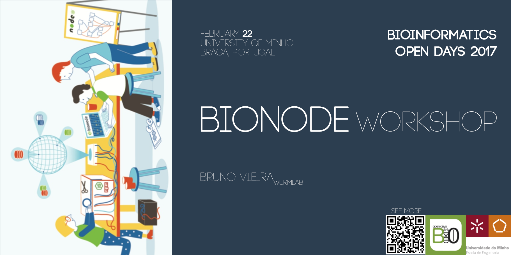

Announcements

# Download all bacteria gff files
$ bionode-ncbi download gff bacteria
# Download all Sequence Read Archives for arthropoda and extract a fastq for each
$ bionode-ncbi download sra arthropoda | bionode-sra fastq-dump
# Parse sequences in a fasta file into one JSON object per line, collect the ones that match chr11 and in fasta
$ cat genome.fasta | bionode-fasta | grep chr11 | bionode-fasta --write
# Retrieves all the metadata about formicidae on the assembly database and save into a Dat repository
$ bionode-ncbi search assembly formicidae | dat import --json
Try them online at
try.bionode.io